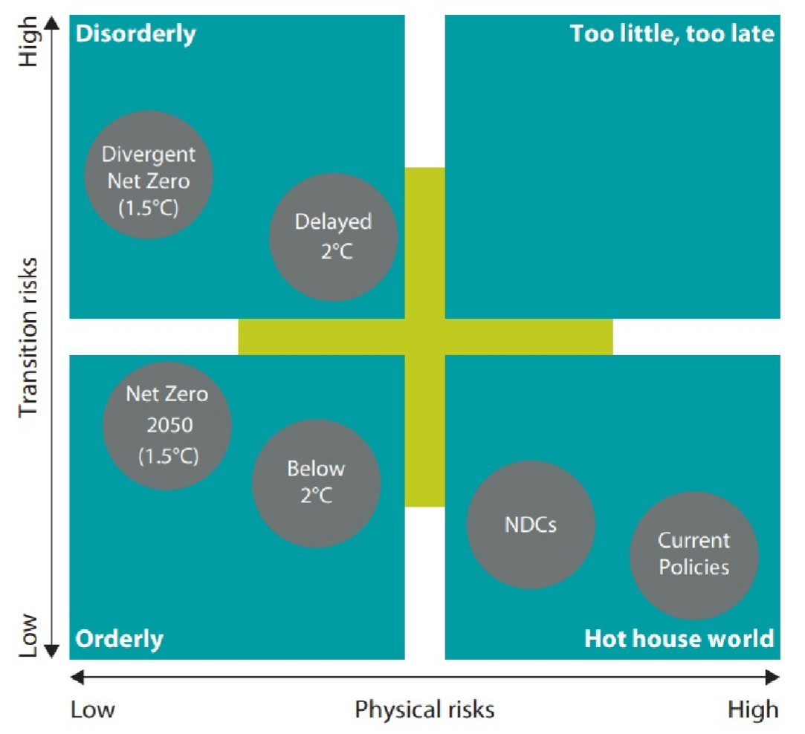

After the Global Financial Crisis (GFC) in 2008-2009, bank stress tests became an integral part of financial supervisors’ risk management toolkit. Through large-scale stress tests, supervisors simulate shocks to whole economy or some sectors to gauge the exposure of financial institutions (FIs from henceforth) to financial risks such as credit risk, market risk, liquidity risk, and operational risk. A climate stress test is designed to measure a FI’s exposure to and impact of climate risks1, using scenario analysis which is a function of different climate shocks (Baudino & Svoronos, 2021). Contrary to traditional stress tests which rely on historical data and statistical modelling focused on short-term risks, a climate stress test is a forward-looking exercise, with time horizons spanning from 5 to 30 years.2
The inherently different nature of the financial risks analyzed in climate stress tests implies several methodological features that are specific to this kind of exercise. For example, there is a lack of knowledge of the feedback loops between climate change and the economy and of the transition risks related to policy choices. As a consequence, climate stress test scenarios are more speculative because they attempt to assign probabilities over never-before-seen natural and economic processes. The deep uncertainty over both physical and transition risks can therefore mitigate the usefulness of these tests for prudential regulation.
Although climate stress testing is still in its early stages, several jurisdictions have announced or even completed climate stress tests (Table 1). To facilitate and standardize the process, the Network for Greening the Financial Systems (NGFS) provides guidance for implementing a climate stress test, including scenario design and technical support.
| Country | Institution | Status | Year |
|---|---|---|---|
| 🇮🇩 | Bank Indonesia | Concluded | 2022 |
| 🇫🇷 | Banque de France | Concluded | 2021 |
| 🇮🇹 | Banca d’Italia | Concluded | 2021 |
| 🇪🇺 | European Central Bank & European Banking Agency | Concluded | 2021 |
| 🇨🇦 | Bank of Canada | Concluded | 2021 |
| 🇿🇦 | South African Reserve Bank | Concluded | 2021 |
| 🇨🇳 | People’s Bank of China | Concluded | 2022 |
| 🇯🇵 | Japan Financial Services Agency & Bank of Japan | Concluded | 2022 |
| 🇬🇧 | Bank of England | Concluded | 2022 |
| 🇰🇷 | Bank of Korea | Concluded | 2022 |
| 🇲🇽 | Banco de Mexico | In Progress | - |
| 🇧🇷 | Banco Central do Brasil | In Progress | - |
| 🇦🇺 | Australian Prudential Regulation Authority | In Progress | - |
| 🇩🇪 | Bundesbank | In Progress | - |
| 🇮🇳 | Reserve Bank of India | In Planning | - |
| 🇺🇸 | Federal Reserve | In Planning | - |
According to the UNEP FI’s Comprehensive Good Practice Guide to Climate Stress Test (UNEPFI, 2021), there are two approaches to performing a stress test—a top-down and a bottom-up approach. A top-down approach is when a supervisory authority performs the test itself, using its own framework, which consists of a specific methodology, and its own data. A bottom-up approach is when a FI uses its own framework and proprietary data but adopts scenarios established by the supervisors as part of an economy-wide supervisory exercise.
Both approaches have advantages and disadvantages (European Banking Authority, 2016). On one hand, top-down tests input official data into a homogeneous framework, without much participation from the FIs that are the object of the analysis. The results are comparable across FIs and provide an all-encompassing view of the climate-related risks faced by the pool of the institutions tested. In addition, the top-down approach is best for assessing systemic risk as it can also capture interconnectedness between FIs and the systemic dimension of climate risks. However, official data used to estimate physical and transition risks often come in an aggregated form, thus lacking the granularity required to pin down the exposure of individual FIs to climate risks. As a result, individual FIs may be reluctant to implement the recommendations.
On the other hand, bottom-up tests are run with FIs’ proprietary data, guaranteeing a higher level of granularity to the analysis. This kind of stress test can reveal not only the risks the whole sector is exposed to but also risks specific to the different banks under supervision. In this way, bottom-up stress tests could trigger a positive chain reaction by increasing the pressure on banks to improve transparency and availability of appropriate data, which will in turn increase the pressure on the banks’ borrowers to do the same. The main drawback of self-assessment is that individual FIs may underestimate their exposure to avoid undesirable interventions from the regulator. In addition, bottom-up test results are not always comparable across the financial sector, failing to provide a consistent view of the state of the sector. Lastly, stress tests are resource-intensive and individual FIs may lack the expertise and the capital to develop robust modeling frameworks.
The inputs of climate stress tests are macro-financial data and climate-related data. Macro-financial data include: i) macroeconomic indicators such as GDP, interest rates, inflation rates, unemployment, and population growth, and ii) finance-related information and metrics like portfolio composition, balance sheets, default probabilities and associated losses. Climate-related data include: i) historical information and projections regarding physical risks such as floods and other extreme weather events, ii) data on transition risks emanating from new policies which could lead to stranded assets and abrupt decreases in asset values, iii) client data such as the geographical location of the FIs’ assets, and iv) company-level emissions data whose equity is on FIs’ portfolios.
Macro-financial data are also used as an input to standard portfolio-level risk models, thus it is often readily available to both regulators and participant institutions. The collection of climate-related data though is a novel task for many FIs and it is associated with new challenges: limited availability, poor quality, and limited comparability (Network for Greening the Financial System, 2022b). A recent survey from UNEP FI’s TCFD program (UNEPFI, 2021) revealed that 60% of FIs responding to the questionnaire were not confident in their ability to collect climate hazard data, with only 4% being quite confident. The NGFS 2022 report on “Bridging the data gap” (Network for Greening the Financial System, 2022b) finds that climate stress tests require emission data, biophysical and geospatial information for which there are no available sources. To address this issue, NGFS encourages FIs to increase efforts towards mutually shared taxonomies and to develop well-defined metrics and standards.
Standard stress testing relies on historical data and narrowly focuses on short-term macro-financial trends, but climate stress testing involves deep uncertainty over the evolution of system-wide factors that unfold in long time horizons (Network for Greening the Financial System, 2020). The inability to attribute probabilities to potential outcomes renders challenging the design of future scenarios, a crucial element of stress tests. To help institutions in this process, in September 2022 the NGFS published the third vesrion of its comprehensive framework with six different scenarios (Figure 1) in terms of the typology of risk (physical and transition) and the size of the risk (low or high)3.

Each NGFS scenario assumes a different evolution of emissions, temperatures, and climate policies:
So far, stress tests have been used by supervisors to engage with financial institutions on climate risks, to gather information about their exposure, and to assess their ability to absorb climate shocks. They are currently not used to derive new regulatory requirements (Baudino & Svoronos, 2021). In spite of this, one common result of the climate stress tests run in the jurisdictions of the E-axes Forum webinar panelists, was that there are overall losses under both the orderly phasing-in of policies and the delayed or disorderly transition but for the former path the losses are lower and more manageable.
So far, stress tests have been used by supervisors to engage with financial institutions on climate risks, to gather information about their exposure, and to assess their ability to absorb climate shocks. They are currently not used to derive new regulatory requirements (Baudino & Svoronos, 2021). In spite of this, one common result of the climate stress tests run in the jurisdictions of the E-axes Forum webinar panelists, was that there are overall losses under both the orderly phasing-in of policies and the delayed or disorderly transition but for the former path the losses are lower and more manageable.
To perform a meaningful climate stress test, both supervisory institutions and FIs should develop robust procedures to collect and process climate data. In its 2021 report on “Climate-related financial risks”, the Bank for International Settlements lists three broad data categories that should be used: i) data describing physical and transition risk drivers5 or geographical data (i.e. coastal elevation models or satellite imagery) to forecast future events.; ii) data describing the vulnerability of exposures6, and iii) financial exposure data7.
So far, the NGFS provided insufficient data to conducts meaningful stress tests. One possible solution for FIs is represented by third-party data providers, which develop models and data that link the NGFS-scenario outputs to firm-level or sectoral-level impacts. It is thanks to these impacts that policymakers and banks are able to assess the climate risks on their balance sheet. In this sense, third-party providers fill a gap that would otherwise force banks and regulators to make huge analytical efforts that is unfeasible for most institutions8. UNEP FI’s report (2021) provides a guideline for institutions for gathering physical and transition risk data from external data providers. The recommendations include: i) identifying open-source platforms9, ii) designing a questionnaire to determine the coverage and the methodologies of the providers, iii) communicating with data providers and collaborating with them. However, even though third-party providers may support institutions in gathering quality data, a more concerted effort by financial institutions and supervisors is likely to be needed. Tan Schelling, senior economist at the Financial Stability division of the Swiss National Bank, argued during the recent E-Axes Forum webinar on Climate Stress Testing that “As climate change is a global phenomenon, the metrics and the definition of data should be consistent across jurisdictions, so there can be comparability. [..] If the definitions are so far apart, the data is not useful anymore.” He added that the Task Force for Climate-Related Financial Disclosures (TCFD) framework is helping to improve the comparability, but so far has only defined categories of metrics, and not metrics themselves.
Academic literature could offer some novel ways to analyze climate-related risks in financial institutions’ asset portfolios. For example, Battiston et al. (2017) develop a network-based climate stress-test methodology which they apply to large Euro Area banks using a ‘green’ and a ‘brown’ scenario. With this methodology, the authors were able to generate data on investors’ equity loss caused by the “brown” scenario. Faiella et al. (2021) use micro-level data on households’ and firms’ energy accounts to estimate the impact of a transition shock on Italian firms and identify sector-specific effects. Another paper by Grippa et al. (2020) contributes to the generation of insightful granular data on loan losses. The authors explore three different transmission channels of a transition shock on the Norwegian financial systems and find that the impact on banks is significant but manageable.
According to Engle et al. (2020), a valid complement to traditional stress tests is market-based stress tests. He argues that these are inexpensive, non-invasive, and use easily updatable methodologies that may be used to confirm or challenge the results of stress tests run by supervisory institutions. These stress tests rely on market data, so they reflect risks that are priced in financial markets10.
Market-based methodologies may well be applied to climate stress tests. For example, Jung et al. (2022) use stock returns and accounting data of large global banks in the U.S., U.K., France, and Japan to estimate a measure called CRISK, systemic climate risk, which is the expected capital shortfall of a financial institution contingent upon a climate stress scenario. Another paper that employs a market-based approach to measure firms’ vulnerability to climate change is Reinders et al. (2023b). In addition to equity data, they also use debt instruments such as mortgages. They apply a Merton contingent claims model (Merton, 1974) to Dutch banks, drawing from Merton’s insight that a negative asset valuation shock will affect the value of both equity and debt in a non-linear manner. In their paper, the negative shock is caused by the implementation of a carbon tax. They conclude that the market value of banks’ assets is extremely sensitive to the price of carbon.
Even if the supervisor can collect a large swath of high-quality and granular data on both macro-financial variables and climate-related variables, the results of a climate stress test are dependent on the scenarios selected for the modeling. Given the deep uncertainty regarding the future evolution of climate change and its impact on the economy, it is difficult to calibrate what a worst-case scenario might be.
During his intervention in the E-Axes Forum webinar, Tan Schelling argues that "the NGFS leaves a wide space open about how to model the shock" for firms and households. This makes it difficult to assess the severity of a scenario. Julia Trabert, Senior Supervisor at the European Central Bank, added that the worst-case scenario “depends on the model that you choose.” But, as Schelling argued, “the NGFS leaves a wide space open about how to model the shock,” confirming that supervisors lack a clear way forward in scenario design. What is certain is what Cassandra Archer, Co-Head of the Climate Club at the Bank of England, reckoned: “The extreme cases are not taken into consideration in climate stress tests, as opposed to normal stress tests,” the implication being that climate stress tests might be underestimating the impact of climate change on the financial sector (Financial Stability Board & Network for Greening the Financial System, 2022).
For scenarios to be severe, at least three assumptions should be included:
There are still limitations to traditional stress testing methodologies in assessing the impact of climate change and informing prudential policies (Reinders et al., 2023a). First, the long-term and non-linear nature of climate risks pose challenges to existing models. As Tan Schelling asserts, policymakers and financial institutions have generally focused on evaluating financial risks, such as credit or market risks, over considerably shorter timeframes. Consequently, a fundamental shift in modeling approaches is essential to address the nature climate risks, a shift that is already taking place. Second, the uncertainty around the evolution of climate over the next decades, which also depends on potential climate policies and their different implementation across jurisdictions, represents an additional source of variability to be addressed via forward-looking scenario analyses. Finally, a high degree of complexity arises from the interactions between a multitude of economic agents, particularly between the real economy and the financial sector.
In general, climate stress tests are an important tool that allows supervisors to gauge the potential impact of climate shocks on different dimensions of financial risk. Depending on the specific methodology, conducting these exercises may be time-consuming and resource-intensive from the FIs’ perspective, but overall the feedback from the industry “is generally positive, because doing the exercise highlighted some weaknesses in their risk management,” as Cassandra Archer explained. Policymakers also benefit from the results of climate stress tests as they acquire a comprehensive view of the fragility of the financial system, often with a sector-specific focus. For example, Cassandra Archer told the E-Axes Forum that “insurers have more capabilities than banks for managing physical risks." Despite all the methodological limitations outlined in the previous section, climate stress tests can still be useful to inform macroprudential policies such as system risk buffers and concentration limits (Monnin, 2022). In fact, climate stress tests improve data quality and availability, encourage rigorous risk management, and prevent the build-up of climate systemic risk over time.
In order to enrich their assessments, supervisors should include a “financial action” scenario, in which no policy is implemented by governments but the financial sector significantly reallocates funding flows toward supporting the transition to net zero. This would be the positive “private sector solution” version of a no-policy scenario. Hopefully, a financial sector private initiative could i) incentivize FIs to support the transition, in order to hedge against a climate crisis and the subsequent significant damages, and ii) highlight the market penalty individual FIs might incur from not following the climate mitigation alignment of the rest of the financial sector.
Alternatively to carrying out economy-wide climate stress test to gauge system risk, supervisors can require institutions to incorporate climate risks in their internal stress tests (European Central Bank, 2020) while providing them with a clear methodology so that quantitative bottom-up stress tests are more comparable(European Central Bank, 2022). Also, they can assess the progress of FIs internal climate risks stress testing practices and share outstanding case studies11.
Besides fully-fledged climate stress tests, another way for supervisors to start thinking about macroprudential policies regarding climate change is through the use of exploratory scenario analysis. These scenarios are not forecasts of the most likely future outcomes. Instead, they delineate pathways toward limiting the rise in global temperatures as a function of future climate policies, technological developments, and consumer behavior. With this tool, supervisors develop scenarios that help the financial sector identify, measure and disclose climate-related risks. For example, The Bank of Canada and Office of the Superintendent of Financial Institutions (OSFI) published in January 2022 a report about a pilot exercise they conducted with six national financial institutions (Bank of Canada and Office of the Superintendent of Financial Institutions, 2022). For the purpose of this pilot, they ask the participating FIs to simulate various stress scenarios reflecting ambitious climate policies and the pace of technological change. The OSFI report concludes by suggesting that institutions might gradually increase banking sector capitalization until 2025 to be ready for the worst-case shock.
| Title | Year | Source | Link | |
|---|---|---|---|---|
| [1] | Using scenario analysis to assess climate transition risk | 2022 | Bank of Canada and Office of the Superintendent of Financial Institutions | link |
| [2] | Results of the 2021 climate biennial exploratory scenario (cbes) | 2022 | Bank of England | link |
| [3] | A first assessment of financial risks stemming from climate change. | 2021 | Bank de France | link |
| [4] | A climate stress-test of the financial system | 2017 | Nature Climate Change | link |
| [5] | Stress-testing banks for climate change – a comparison of practices | 2021 | Bank for International Settlements | link |
| [6] | Hedging climate change news | 2020 | The Review of Financial Studies | link |
| [7] | Draft guidelines on stress testing and supervisory stress testing. | 2016 | European Banking Authority | link |
| [8] | Guide on climate-related and environmental risks. | 2020 | European Central Bank | link |
| [9] | 2022 climate risk stress test. | 2022 | European Central Bank | link |
| [10] | A micro-founded climate stress test on the financial vulnerability of italian households and firms. | 2021 | Banca D'Italia | link |
| [11] | Climate scenario analysis by jurisdictions initial findings and lessons. | 2022 | Financial Stability Board, & Network for Greening the Financial System | link |
| [12] | Climate finance. | 2021 | Annual Review of Financial Economics | link |
| [13] | Climate-related stress testing: Transition risks in norway. | 2020 | IMF | link |
| [14] | Central banking challenges posed by uncertain climate change and natural disasters. | 2022 | Journal of Monetary Economics | link |
| [15] | Cmip6: the next generation of climate models explained. | 2019 | Hausfather, Z. | link |
| [16] | Climate finance. | 2020 | The Review of Financial Studies | link |
| [17] | Global energy and carbon model | 2022 | International Energy Agency | link |
| [18] | Climate stress testing | 2022 | Federal Reserve Bank of New York Staff Reports | |
| [19] | Climate change 2021: The physical science basis. contribution of working group i to the sixth assessment report of the intergovernmental panel on climate change. | 2021 | Cambridge University Press | |
| [20] | The rcp greenhouse gas concentrations and their extensions from 1765 to 2300. | 2011 | Climatic Change | link |
| [21] | On the pricing of corporate debt: the risk structure of interest rates. | 1974 | The Journal of Finance | link |
| [22] | Is the current macroprudential framework fit for climate systemic risk? | 2022 | Council on Economic Policies | link |
| [23] | Guide to climate scenario analysis for central banks and supervisors. | 2020 | Network for Greening the Financial System | |
| [24] | Scenarios in action: A progress report on global supervisory and central bank climate scenario exercises. | 2021 | Network for Greening the Financial System | link |
| [25] | Climate scenarios for central banks and supervisors. | 2022a | Network for Greening the Financial System | link |
| [26] | Final report on bridging data gaps executive summary 4. | 2022b | Network for Greening the Financial System | link |
| [27] | Climate risk stress testing: A conceptual review | 2023a | SSRN Electronic Journal | link |
| [28] | A finance approach to climate stress testing. | 2023b | Journal of International Money and Finance | link |
| [29] | What do you think about climate finance? | 2021 | Journal of Financial Economics | link |
| [30] | Comprehensive good practice guide to climate stress testing. | 2021 | UNEPFI | link |
| [31] | Central bank and prudential supervisor of institutions. | 2018 | Vermeulen et al. | link |
| Scenario | GDP Impact (%) | Financial Sector Losses (EUR bn) | Carbon Price (EUR/tonne) | Physical Risk Score |
|---|---|---|---|---|
| Orderly Transition | -2.3 | 45.7 | 130 | Low |
| Disorderly Transition | -5.8 | 127.4 | 580 | Medium |